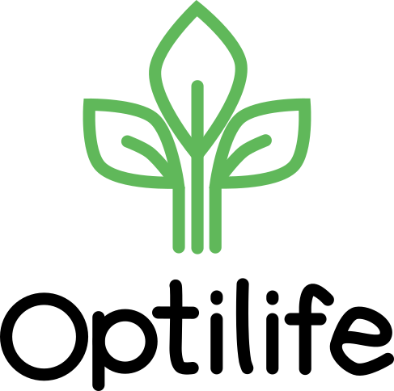

<!DOCTYPE html>
<html lang="es">
<head>
    <meta charset="UTF-8">
    <meta name="viewport" content="width=device-width, initial-scale=0.9"> <!-- Ajustar zoom inicial al 90% -->
    <title>Optilife</title>
    <link rel="stylesheet" href="index.css">
    <style>
        /* Estilos para mejorar la apariensscia del logo */
        .main-image {
            width: 80px; /* Ajusta este valor para cambiar el tamaño */
            height: auto; /* Mantén las proporciones del logo */
            display: block; /* Centrar el logo dentro del contenedor */
            margin: 10px auto; /* Añade espacio alrededor y centra */
            border-radius: 8px; /* Opcional: esquinas redondeadas para darle un toque estético */
        }

        .sidebar {
            background-color: #ffffff; /* Fondo claro para contraste */
            padding: 10px;
        }
    </style>
</head>
<body>
    <div class="main-container">
        <aside class="sidebar" id="sidebar">
            <div class="up_sidebar">
                
            </div>
            <div class="middle_sidebar">
                <button onclick="changeContent('./clima.html')">Clima</button>
                <button onclick="changeContent('./semilla.html')">Cultivos</button>
                <button onclick="changeContent('./MapaInteractivo.html')">Cuerpos de agua</button>
                <button onclick="changeContent('./MapaAcuaductos.html')">Acueductos</button>
                <button onclick="changeContent('./suelo.html')">Tipo de suelo</button>
                <button onclick="changeContent('./sobre_nosotros.html')">Devs</button>
            </div>
        </aside>
        <section class="content">
            <iframe id="main-iframe" src="./clima.html" width="100%" height="100%" frameborder="0"></iframe>
        </section>
    </div>
    <script src="index.js"></script>
</body>
</html>
